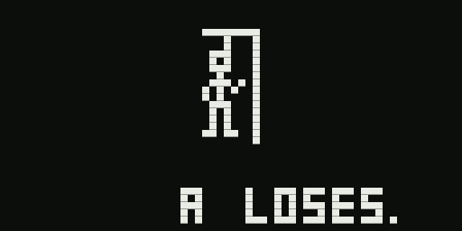

Nim
M. K. Dowson · DREAMER no. 5 (1981-01) p. 17 1K RAM


Two players take turns removing 1, 2 or 3 of 21 symbols, and whoever takes the last one wins. Scores are kept across games and the next game starts by itself.
Keys
1, 2 or 3 removes that many symbols (players A and B alternate).
Files
| File | Version | Load | Run |
|---|---|---|---|
| Nim.c8 | main | 0200-034F | C000 |
Listing as transcribed (with notes): nim.txt
Source
DREAMER no. 5 on archive.org, p. 17 (PDF page 19). Author: M. K. Dowson.
Corrections applied
None.
Open doubts
None.